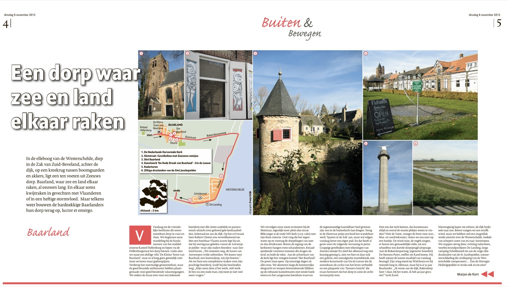
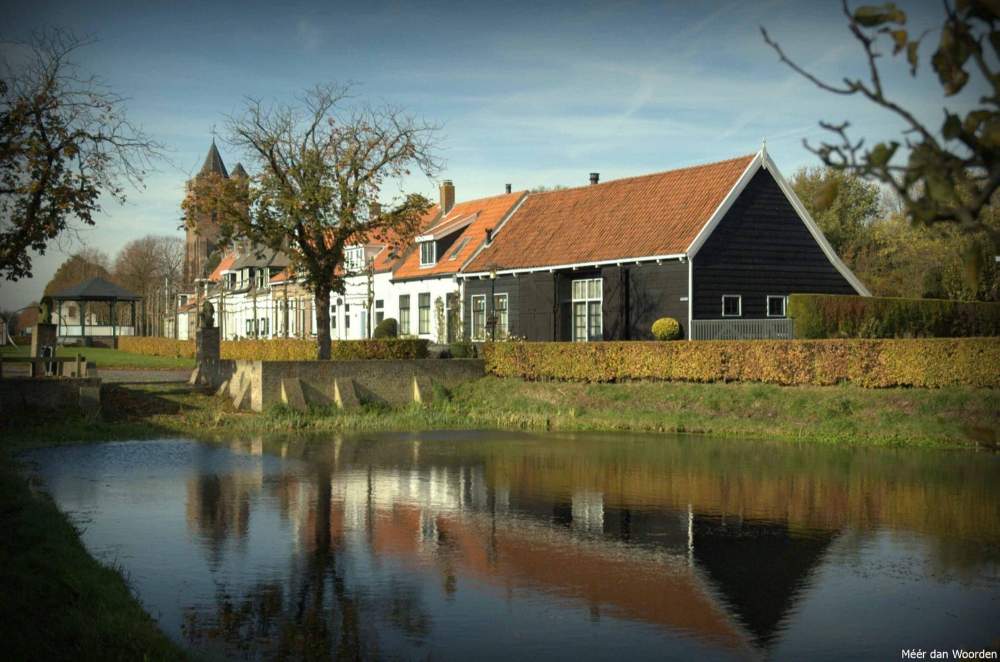

Waar zee en land elkaar raken – een wandeling
In de ellenboog van de Westerschelde, diep in de Zak van Zuid-Beveland, achter de dijk, op een kreekrug tussen boomgaarden en akkers, ligt een ten voeten uit Zeeuws dorp. Baarland, waar zee en land elkaar raken, al eeuwen lang. En elkaar soms kwijt raken in gevechten met Vlaanderen of in een heftige stormvloed. Maar telkens weer bouwen de hardnekkige Baarlanders hun dorp terug op, luctor et emergo.
Vandaag zet de vriendelijke herfstzon dit onverwoestbare dorp in vuur en vlam. We beginnen onze wandeling bij de fundamenten van het middeleeuwse Kasteel Hellenburg en lopen via de Hellenburgstraat het dorp binnen. Links zien we naast een deftige villa ‘De Kleine Toren van Baarland’, waar ze al lang geen geestelijk voer meer serveren maar godenspijzen.

Verderop het voormalige gemeentehuis, waar de goed betaalde ambtenaren hebben plaats gemaakt voor goed betalende vakantiegangers. We steken de straat over voor een kolossale boerderij met dik rieten zadeldak en panoramisch uitzicht over golvend gele koolzaadvelden, helemaal tot aan de dijk. Op het erf zwaait boer Robert Cleiren ons verwelkomend toe. Met een hoorbaar Vlaams accent legt hij uit, dat hij veertig jaar geleden vanuit de Antwerpse polder -waar zijn ouders boerden- naar Zeeland kwam. “We moesten weg, de haven van Antwerpen wilde uitbreiden. We kozen voor Baarland, een boerendorp, wíj zijn boeren.” Als we hem een compliment maken voor zijn prachtige boerderij, wuift hij dat bescheiden weg: “Mijn zoon doet al het werk, véél werk. Ik ben nu een oude man, mij moet je niet veel meer vragen.”
We vervolgen onze route en komen bij de Slotstraat, eigenlijk meer plein dan straat. Blikvanger is de oude Nederlands Hervormde kerk (1275-1280) met zijn forse cisterne. Ooit ving die het regenwater op en voorzag de dorpelingen van zoet en dus drinkwater. Boven de ingang van de kerktoren hangen twee schandstenen. Kwaadsprekende vrouwen moesten die dragen als straf, zo luidt de tekst.
Aan de achterkant van de kerk ligt het vroegere kasteel ‘Slot Baarland’. De poort staat open. Op sommige dagen zit alles mee. We slenteren langs de lommerrijke slotgracht en werpen bewonderende blikken op de robuuste kasteelmuren met ronde hoektorens en het aangename koetshuis waarvan de tegenwoordige kasteelheer heel gewoon zijn was in de buitenlucht laat drogen.

Terug in de Slotstraat prijst een bord het wandelnetwerk ‘Sporen in de Zak’ aan, maar wij volgen vandaag liever ons eigen pad. En dat heeft al gauw weer de volgende verrassing in petto: Grappige gevelluiken met tekeningen van Zeeuws meisje! En alsof dat allemaal nog niet kunstig genoeg is, zien we hier en daar ook een galerie, een nostalgische muziekkiosk, een modern kunstwerk van Iris de Leeuw dat de zonnebaan als cyclus van het leven verbeeldt en een plaquette van ‘Zeeuws Gezicht’ die eraan herinnert dat het dorp in 2000 de architectuurprijs won. Hoe zou dat toch komen, dat kunstenaars altijd en overal de mooie plekjes weten te vinden?
Vóór de Vaete, vroeger de bron voor was-, blus- en veedrinkwater, vleien we ons neer op een bankje. De wind ruist, de vogels zingen, er heerst een gemoedelijke stilte, tot een schoolbus wat dartele dorpsjeugd uitspuugt. Aan de Bakendorpseweg, tegenover boerderij De Steenen Poort, treffen we Karel Joosse. Hij heeft zojuist de laatste maaltijd van vandaag bezorgd. Zijn wieg stond op Walcheren en hij woonde lang in Alkmaar, maar hij is al 32 jaar Baarlander. ”Ik woon aan de dijk, Bakendorp heet ’t daar, bij het water, ik heb 40 jaar gevaren!” lacht Karel veelbetekenend.
Nieuwsgierig lopen we erheen, de dijk lonkt ook ons. Boven vangen we een straffe wind, maar we hebben wel een magnifiek weids uitzicht over de Westerschelde. Joekels van schepen varen van en naar Antwerpen. We stappen stevig door, richting radartoren, voorbij strandpaviljoen De Landing, langs camping Scheldeoord tot aan de ruige zilte draslanden van de St. Jacobspolder, natuurontwikkeling die verdieping van de Westerschelde compenseert… Zou de Hertogin Hedwigepolder er straks ook zo uit zien?
Route van de wandeling (ca. 5km):
Start bij de restanten van Kasteel Hellenburg
via Hellenburgstraat, hoek Nieuweweg, langs ‘De Kleine Toren van Baarland’
Weer terug de Hellenburgstraat op
Even verderop, aan de rechterkant van de Hellenburgstraat, boerderij en erf van boer Cleiren
Weer terug de Hellenburgstraat op en rechtdoor richting Slotstraat
Links op de Slotstraat de NH-kerk met cisterne
Achter de kerk, door het hek, rondje om Slot Baarland
Weer terug de Slotstraat op: daar zien we de gevelluiken met Zeeuws meisje, de muziekkiosk, De Rode Draak van Baarland (kunstwerk Iris de Leeuw), de plaquette Zeeuws Gezicht en de Vaete
Rechts langs de Vaete, de Bakendorpseweg op en het dorp uit naar de Westerschelde
Eind Bakendorpseweg, omhoog de dijk op
Op de dijk naar rechts, richting radartoren, voorbij paviljoen De Landing, langs camping Scheldeoord
Tot aan de St. Jacobspolderweg, uitzicht over de zilte draslanden (natuurontwikkeling), einde wandeling.